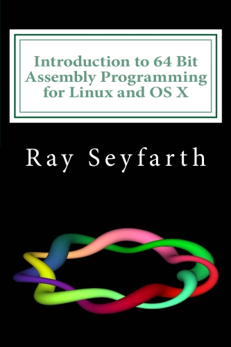

Introduction to 64 Bit Assembly Language Programming
Ray Seyfarth
PDF Books
|  | $4.99 (USD)
The purchase is for a PDF copy of the book. |

|

|
 |
$4.99 (USD)
The purchase is for a PDF copy of the book. |
|
|
About the books
The first book is the third edition of an assembly language programming textbook introducing programmers to 64 bit Intel assembly language. The primary addition to the third edition is the discussion of the new version of the free integrated development environment, ebe, designed by the author specifically to meet the needs of assembly language programmers.
The second book is a clone of the first adapted for the Windows operating systems. Windows uses a different function call protocol so it makes sense to provide a different book for Windows. It would be confusing to see 2 ways to do things in an introductory assembly class, though it would be fine to have one book as a reference.
The new ebe is a C++ program using the Qt library to implement a GUI environment consisting of a source window, a data window, a register, a floating point register window, a backtrace window, a console window, a terminal window and a project window along with 2 educational tools called the "toy box" and the "bit bucket".
The source window includes a full-featured text editor with convenient controls for assembling, linking and debugging a program. The project facility allows a program to be built from C source code files and assembly source files.
Assembly is performed automatically using the yasm assembler and linking is performed with ld or gcc. Debugging operates by transparently sending commands into the gdb debugger while automatically displaying registers and variables after each debugging step.
The second important addition to the Linux book is support for the OS X operating system. Assembly language is similar enough between the two systems to cover in a single book. The book discusses the differences between the systems. The book is intended as a first assembly language book for programmers experienced in high level programming in a language like C or C++. The assembly programming is performed using the yasm assembler automatically from the ebe IDE under the Linux operating system.
The Linux/OS X book describes how to do similar things under Windows and likewise the Windows book discusses how these things are done in Linux and OS X. A person would probably be satisfied with reading just the book for their favorite system.
The book primarily teaches how to write assembly code compatible with C programs. The reader will learn to call C functions from assembly language and to call assembly functions from C in addition to writing complete programs in assembly language.
The gcc compiler is used internally to compile C programs. The book starts early emphasizing using ebe to debug programs, along with teaching equivalent commands using gdb. Being able to single-step assembly programs is critical in learning assembly programming. Ebe makes this far easier than using gdb directly. Unfortunately gdb only works well for assembly programs in Linux. It is unaware of line numbers in Windows and OS X, though ebe handles that problem by reading the listing file.
Highlights of the books include doing input/output programming using the Linux system calls, Windows API functions and the C library, implementing data structures in assembly language and high performance assembly language programming. Early chapters of the book rely on using the debugger or ebe to observe program behavior. After a chapter on functions, the user is prepared to use printf and scanf from the C library to perform I/O.
The chapter on data structures covers singly linked lists, doubly linked circular lists, hash tables and binary trees. Test programs are presented for all these data structures.
There is a chapter on optimization techniques and 3 chapters on specific optimizations. One chapter covers how to efficiently count the 1 bits in an array with the most efficient version using the recently-introduced popcnt instruction. Another chapter covers using SSE instructions to create an efficient implementation of the Sobel filtering algorithm. The final high performance programming chapter discusses computing correlation between data in 2 arrays. There is an AVX implementation which achieves 20.5 GFLOPs on a single core of a Core i7 CPU.
A companion web site, http://www.rayseyfarth.com, has a collection of PDF slides which instructors can use for in-class presentations and source code for sample programs.
The Linux/OS X book is 270 pages, while the Windows book is 266.